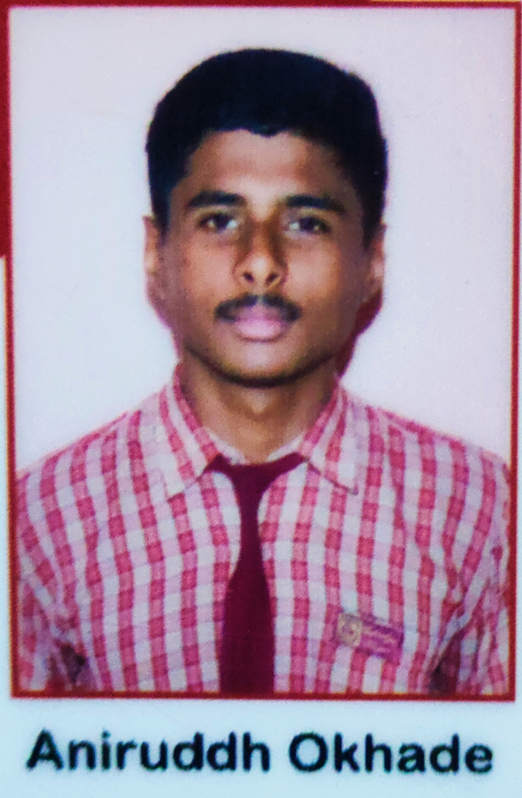

"Hello everyone, I’m Aniruddh Okhade. This is my first Capstone Project
as I begin my journey as a web developer. This project showcases my resume."

Educational Qualifications
Bachelor of Technology in Internet Of Things
Madhav Institute of Technology and Science, Institute in Gwalior, Madhya Pradesh, India
September 2024 - present
Currently in 2nd semester
Relevant Coursework: C programming, C++, OPPS(Through CPP)
Schooling (Secondary Education and Senior Secondary Education)
Vatsalya Public School , Sagar , Madhya Pradesh , India
2011-2023
Senior Secondary Education
Percentage: 83%
School Sports Captain (2022–23)
Secondary Education
Percentage: 70%
Skills
Currently learning Web Development (HTML, CSS, JavaScript)
Familiar with programming in C and C++
Understanding of Object-Oriented Programming (OOPs) Concepts